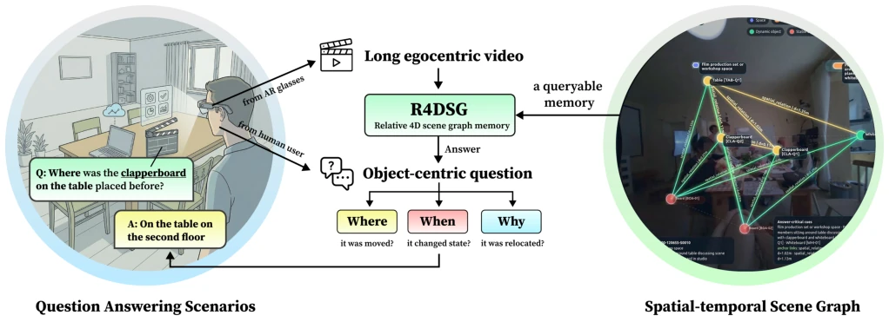
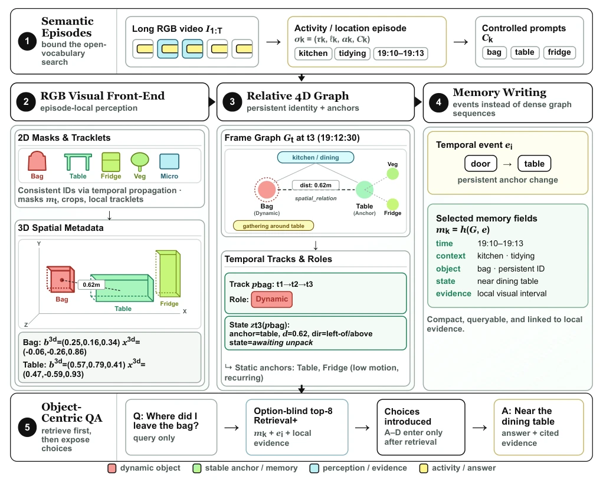
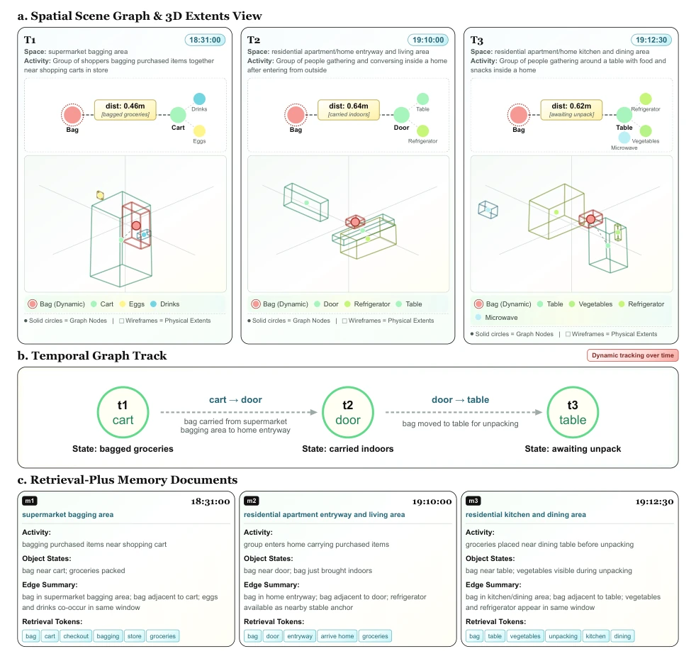

这篇论文给长时程第一人称视频 QA 开了个“相对论”药方。别总想着重建完美 3D 世界了，自拍杆抖得跟帕金森似的，强行全局对齐纯属自嗨。R4DSG 聪明在把“锚点”和“物体”分开，桌子是锚，杯子是客，杯子从桌子 A 挪到桌子 B 才是记忆重点。虽然没提“具身动作”，但这套记忆机制简直是 AR 眼镜的刚需。不过，单主体数据测试有点“关公战秦琼”，离线记忆也限制了实时性，要是真戴眼镜上脸，内存爆了怎么办？这方法在 EgoLifeQA 上确实赢了，但泛化性还得看后续。它证明了在弱感知下，相对关系比绝对坐标更有用，但忽略了复杂物理交互，属于“够用就行”的工程派思路，适合特定场景而非通用机器人。
This paper prescribes a "relativity" remedy for long-term first-person video QA. Stop constantly thinking about reconstructing a perfect 3D world; selfie sticks shake like Parkinson's, forcing global alignment is purely self-indulgence. R4DSG is clever in separating "anchors" and "objects"; the table is the anchor, the cup is the guest, the cup moving from Table A to Table B is the memory focus. Although "embodied action" is not mentioned, this memory mechanism is simply a must-have for AR glasses. However, single-subject data testing is a bit like "Guan Gong fighting Qin Qiong" (a mismatched comparison), offline memory also limits real-time performance; if truly worn on the face, what if memory overflows? This method indeed wins on EgoLifeQA, but generalization depends on follow-ups. It proves that under weak perception, relative relations are more useful than absolute coordinates, but ignores complex physical interactions, belonging to an "good enough" engineering approach, suitable for specific scenarios rather than general-purpose robots.
Long-term first-person video is a rich mine for wearable AI, but existing methods either rely on subtitles (losing object identity) or rely on strong geometry (RGB-D/point clouds) [15, 35]. EgoLife [38] and AMEGO [11] emphasize memory, but are mostly based on segments or summaries, lacking structured object state tracking. For questions like "where is the charger", existing RAG or video QA struggle to maintain object constancy across long time spans. R4DSG aims to solve object state memory problems under weak perception, does not pursue global maps, only focuses on relative anchor changes, filling the gap in long-term object-centric QA. Existing work like Open3DSG requires point clouds, while here only RGB is used, a pragmatic compromise, but may lose depth information.

Figure 1: R4DSG maps long egocentric video to a relative scene-memory for object-centric question answering.
方法Method
整体 Pipeline 分五步：1. 语义片段构建，按活动/位置切分视频；2. RGB 视觉前端，用 SAM 3 做分割，SAM 3D 做相对 3D 提升；3. 帧图构建与持久关联，区分静态锚点与动态物体；4. 记忆写入，生成时间事件和检索文档；5. QA 检索。核心创新是“相对 4D 场景图”，不存全局坐标，只存物体相对于锚点的状态转移（如 `bag -> table`）。记忆单元是片段级的 `Retrieval-plus doc`，包含时间、地点、对象状态及交互线索，支持结构化检索而非纯文本。这种方法避免了全局重建误差传播，错误只局限在局部片段，更适合长视频。通过锚点相对性，系统无需校准相机即可工作。
The overall Pipeline is divided into five steps: 1. Semantic segment construction, splitting video by activity/location; 2. RGB visual frontend, using SAM 3 for segmentation, SAM 3D for relative 3D enhancement; 3. Frame graph construction and persistent association, distinguishing static anchors and dynamic objects; 4. Memory writing, generating time events and retrieval documents; 5. QA retrieval. The core innovation is the "Relative 4D Scene Graph", storing no global coordinates, only storing object state transitions relative to anchors (e.g., `bag -> table`). The memory unit is segment-level `Retrieval-plus doc`, containing time, location, object state, and interaction clues, supporting structured retrieval rather than pure text. This method avoids global reconstruction error propagation, errors are limited to local segments, more suitable for long videos. Through anchor relativity, the system works without camera calibration.

Figure 2: R4DSG pipeline. Semantic episodes guide RGB-only segmentation and lifting; persistent identities and anchor changes are then written as retrieval-ready memory for QA. The figure reads top-to-bottom, with its three core technical stages arranged left-to-right between episode parsing and downstream answer synthesis.

Figure 3: Bag-transfer example showing three anchor-relative states, the induced cart →door →table temporal track, and the resulting retrieval-plus memory documents. Top: scene graph and 3D extents at three timestamps; middle: the persistent track over anchors and state labels; bottom: the segment-level documents later retrieved for QA.
Tested on EgoLifeQA's A1_JAKE single-subject set, 255 object-centric questions. Baselines include Plain RAG, EgoRAG-Text, VLM-only, etc. Metric is accuracy. R4DSG improves overall by 6.7 points under "question-only retrieval", "when" questions improve by 12.5 points, significantly better than EgoRAG-Text. Ablation experiments show that removing anchor transition memory (No-Transition) performance drops, proving relative state change is key. After memory compression only 0.58MB, efficiency is high. Although results are good, based only on single-subject data, cross-person generalization ability is unknown, and "why" question improvement is limited, indicating causal reasoning is still a difficulty, needing more explanatory data support.